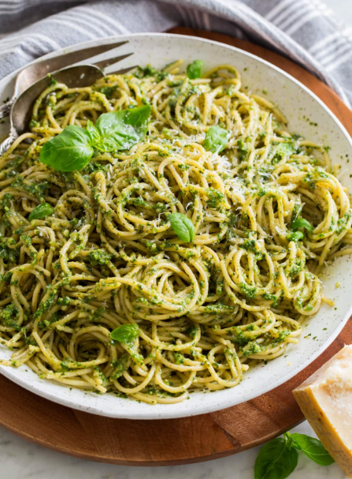

Pesto Pasta

Description:
A delightful and flavorful pesto pasta dish that's simple to prepare and bursting with fresh basil goodness.
Ingredients:
- 8 oz (225g) pasta (spaghetti or penne)
- 2 cups fresh basil leaves
- 1/2 cup grated Parmesan cheese
- 1/3 cup pine nuts
- 2 cloves garlic
- 1/2 cup extra-virgin olive oil
- Salt and pepper to taste
- Optional: cherry tomatoes for extra color and flavor
- Basil leaves for garnish
Steps:
- Cook the pasta according to the package instructions until al dente. Drain and set aside.
- In a food processor, combine the fresh basil leaves, grated Parmesan cheese, pine nuts, and garlic.
- Pulse the mixture while slowly drizzling in the olive oil until it forms a smooth and creamy pesto sauce.
- Season the pesto with salt and pepper to your taste preferences.
- In a large mixing bowl, toss the cooked pasta with the prepared pesto sauce until evenly coated.
- Optional: Add some halved cherry tomatoes for extra color and a burst of tangy flavor.
- Garnish the pesto pasta with a few fresh basil leaves for a beautiful finishing touch.
- Serve immediately and enjoy!